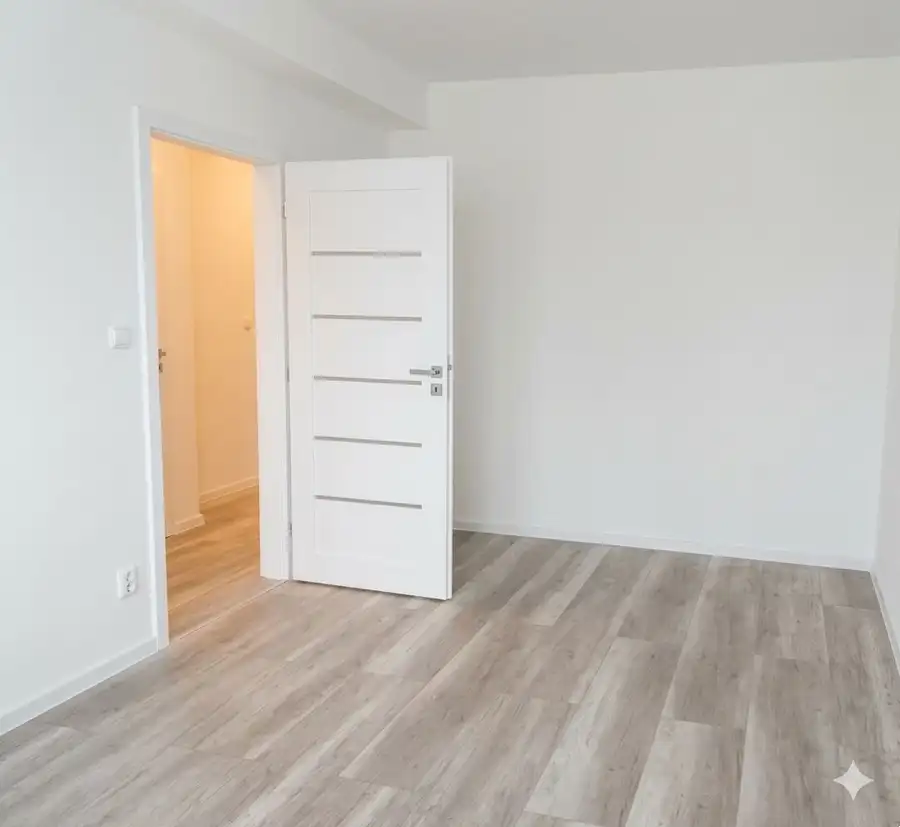
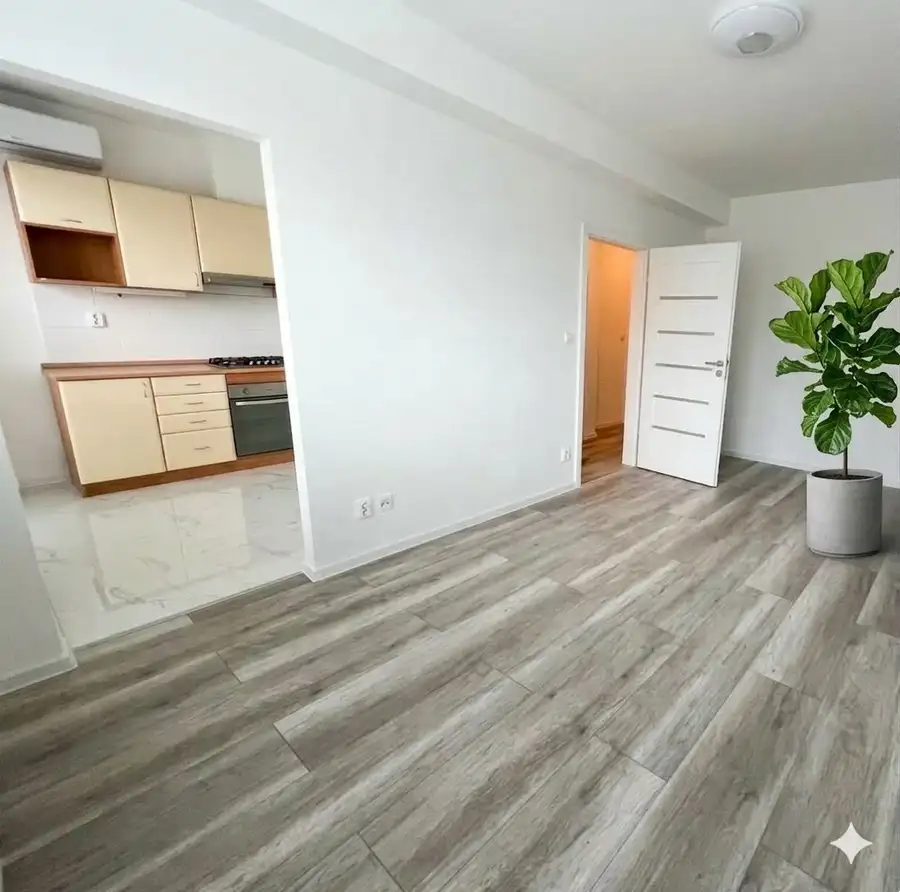
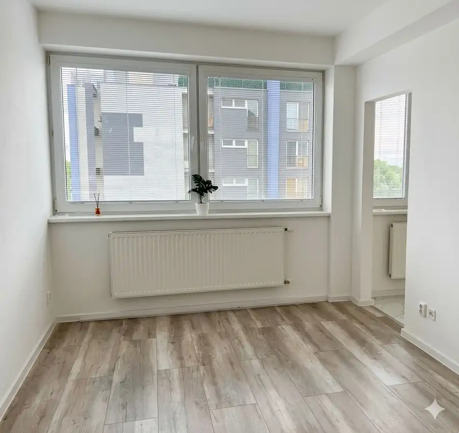
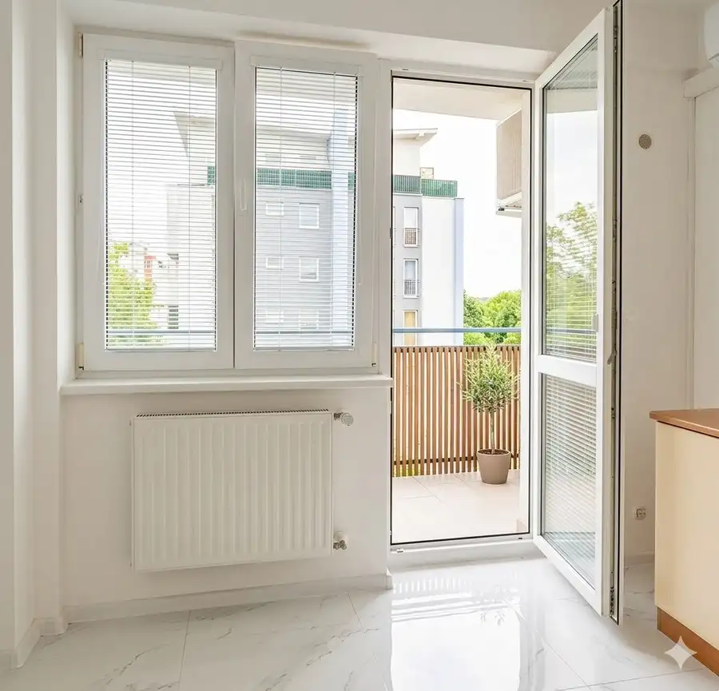
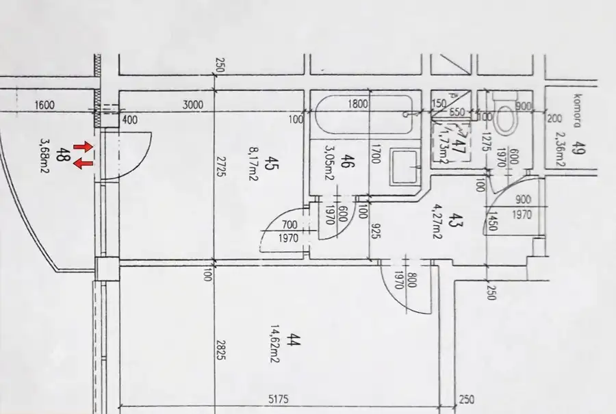
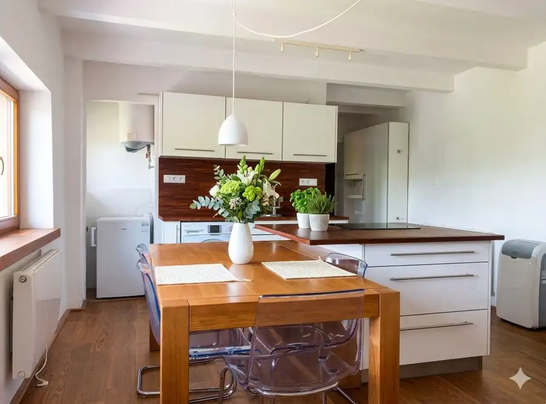
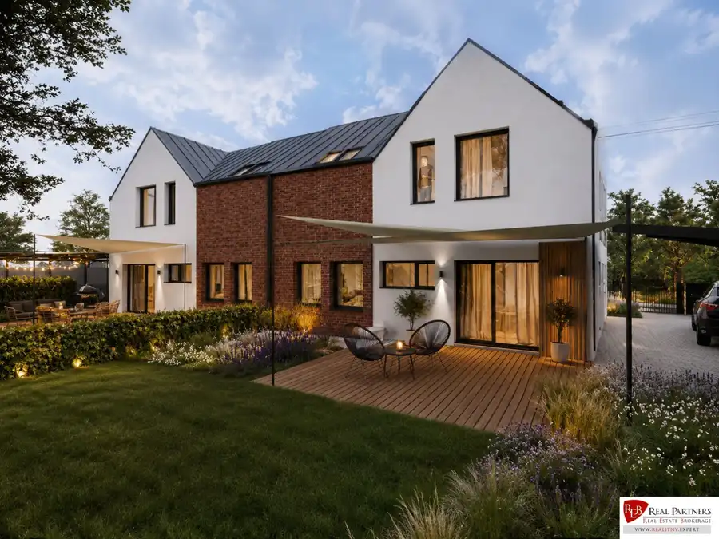
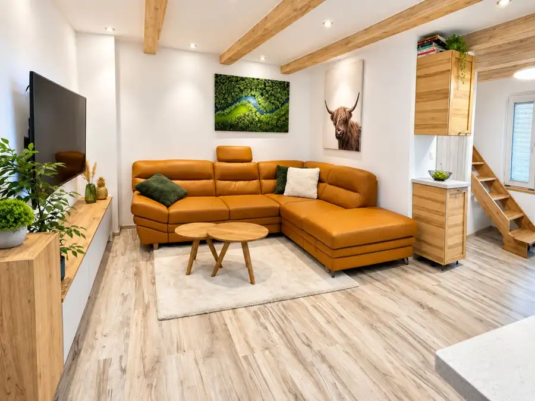

REB.SK | Štýlový 1i byt (38m²) po rekonštrukcii, Kazaňská ul.
Podunajské Biskupice, Bratislava





- Dispozícia1-izbový
- Plocha34.2 m²
- Poschodie6. z 8
- StavKompletná rekonštrukcia
- VlastníctvoOsobné
- Energetická triedaA
O nehnuteľnosti
REB.SK | Štýlový 1i byt (38 m²) po rekonštrukcii, Kazaňská ul., Bratislava - P. BiskupiceSvetlý, kompletne zrekonštruovaný 1-izbový byt – ideálna investícia s okamžitým výnosom alebo perfektné štartovacie bývanie (aktuálne s dlhodobým nájomcom).Ponúkam na predaj moderný a vkusne zrekonštruovaný 1-izbový byt na Kazaňskej ulici, ktorý predstavuje vynikajúcu investičnú príležitosť alebo štartovacie bývanie. Byt prešiel v roku 2022 kompletnou obnovou a vďaka svojej polohe v udržiavanom bytovom dome ponúka komfortné mestské bývanie bez potreby ďalších investícií.DISPOZIČNÉ RIEŠENIE:Byt s celkovou úžitkovou plochou 34,20 m² (vrátane komory 2,36 m²) + balkón 3,68 m² ponúka inteligentne a efektívne využitý priestor.Dispozícia pozostáva z:Vstupnej chodby s praktickým úložným priestoromModernej kúpeľne spojenej s WC (vkusný mramorový obklad a sprchový kút)Sriestrannej a svetlej izby, ktorá plynule spája obývaciu časť s funkčným kuchynským kútomPARAMETRE A VYBAVENIE:Stavba: Byt sa nachádza v bytovom dome z roku 2005 s čistými spoločnými priestormi a výťahom.Vybavenie: Kompletná rekonštrukcia (2022) zahŕňala nové podlahy, stierky, elektrické rozvody a modernú kuchynskú linku. Byt pôsobí sviežo, čisto a svetlo.Poschodie: Situovaný na 6. poschodí z 8, čo zaručuje dostatok súkromia, pokoja a príjemný výhľad.Mesačné náklady: Cca 150 € / mesiac.INVESTIČNÝ BONUS:Byt je aktuálne prenajatý spoľahlivému a slušnému nájomcovi, ktorý v ňom spokojne býva už 3 roky. Pre nového majiteľa to predstavuje obrovskú výhodu:Okamžitý cashflow od prvého dňa po kúpe.Bezstarostnosť – nemusíte hľadať nového nájomcu, pripravovať zmluvy ani platiť províziu za obsadenie bytu.(V prípade záujmu o vlastné bývanie je samozrejme možné pokračovať v zmysle dohody a zmluvných podmienok).LOKALITA:Kazaňská ulica je srdcom Podunajských Biskupíc a ponúka všetko potrebné doslova na dosah ruky:Nákupy: Lidl, Kaufland, Billa a ďalšie prevádzky v pešej dostupnosti.Služby: Lekárne, banky, fitness centrá a reštaurácie priamo v bezprostrednom okolí.Dostupnosť: Výborné napojenie na MHD (autobusy a trolejbusy) a rýchly prístup na diaľničný obchvat (D4/R7).CENA A DOPLŇUJÚCE INFO:Cena nehnuteľnosti: 175 000 EURV cene je započítaný kompletný právny servis, vypracovanie kúpnych zmlúv, profesionálne poradenstvo a provízia realitnej kancelárie.V prípade financovania nehnuteľnosti prostredníctvom hypotekárneho úveru je vám bezplatne k dispozícii náš hypotekárny špecialista. Vybaví vašu hypotéku za najvýhodnejších podmienok na trhu, čím vám ušetrí nielen financie, ale aj drahocenný čas.Ak vás táto ponuka zaujala, pre bližšie informácie alebo dohodnutie termínu obhliadky ma neváhajte kontaktovať.Kontakt:Mgr. Silvia Čerešňatel.: +421 903 159 951email: ceresna@reb.sk© Všetky informácie uvedené v tomto inzeráte sú orientačné a môžu podliehať zmene.© Text a fotografie sú autorským dielom a majetkom realitnej kancelárie REB - REAL PARTNERS.
Parametre
- Cellar area
- 2 m²
- Cena vrátane energií
- Nie
- Druh
- 1 izbový byt
- Dátum zverejnenia
- 05. 10. 2026
- Energetický certifikát budovy
- A
- Plocha balkónu v m2
- 3 m²
- Podlažie
- 6
- Počet izieb / miestností
- 1
- Počet nadzemných podlaží
- 8
- Rok výstavby
- 2005
- Stav nehnuteľnosti
- Kompletná rekonštrukcia
- Telekomunikácie
- Optická sieť
- Typ
- Predaj
- Typ konštrukcie
- Tehlová
- Umiestnenie
- Ďalšie nadzemné podlažie
- Vlastníctvo
- Osobné
- Vybavenie
- Balkón, Pivnica, Verejné parkovanie, Výťah
- Zariadenie
- Čiastočne zariadené
- Úžitková plocha
- 34.2 m²
Kde to je


Mohlo by Vás zaujímať

BytNové 233 000 €REB.SK - 1i byt s výhľadom na Slavín v tichej časti Starého Mesta Staré Mesto, Bratislava 1-izbový40.96 m²3. podlažie
BytNové 280 500 €REB.SK - Rezidenčný byt B1 so záhradou v rodinnom dome, Ružinov Ružinov, Bratislava 3-izbový60 m²
BytNové 244 800 €REB.SK - 3-iz mezonet, 16 m² terasa a záhradka, Ružinov Ružinov, Bratislava 3-izbový55.39 m²